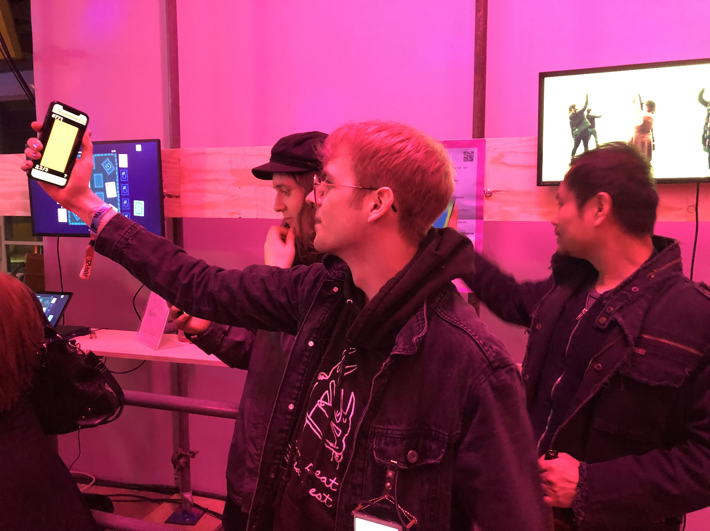

chromapose
Visit chromapose.me on your phone to play!
Description
Chromapose is a game that makes people dance together with their phones.
Instructions
- Visit chromapose.me on your phone to join
- Start a new game, or join one by entering the # on your friends' screens
- Everyone sees the same outer color
- Move your phone to change the inner color and match the outer color
- When everyone matches the outer color, it changes
Photos

Poster
Exhibitions
- Global Game Jam, Goldsmiths, University of London, London, UK
- getLerped, Computational Arts Pop Up, Goldsmiths, University of London, London, UK
- EGX Rezzed 2019, Tobacco Dock, London, UK
- A MAZE. / Berlin 2019 - 8th International Games and Playful Media Festival, SEZ, Berlin, DE
- Amsterdam JSNation, Zuiderkerk, Amsterdam, NL
- Experiments in Play, Goldsmiths, University of London, London, UK
- Beta Public X, Camden Peoples’ Theatre, London, UK
- Games Library Night, Goldsmiths, University of London, London, UK
Thanks
Code partially adapted from socket-io-game by Sean Goedecke.
Created for Approaches to Play 1 at Goldsmiths, University of London taught by Phoenix Perry.
Videos and photos feature players Jamie Sichel, Rachel Clancy, Tammu Do, Rachael Melanson, and Phoenix Perry.